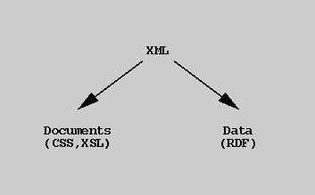

Though this is a continuum, there are some fundamental differences in these two application categories. Data oriented applications are : Less concerned about serial order. e.g., patient records vs poems More concerned with aggregation. e.g., merging information about a patient from different sources vs merging musical scores
Data oriented applications are :
e.g., patient records vs poems
e.g., merging information about a patient from different sources vs merging musical scores